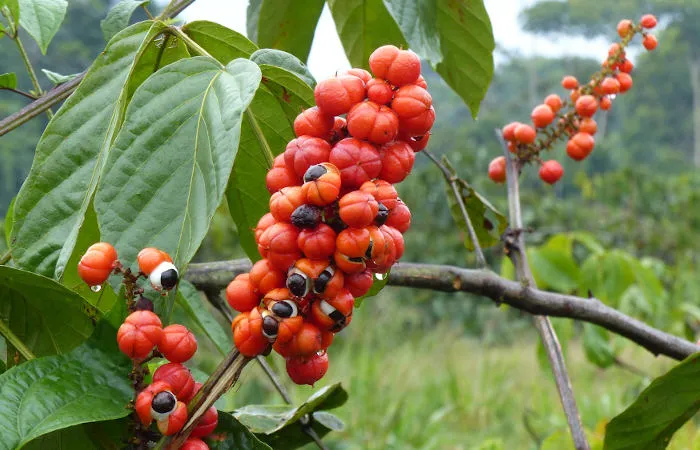
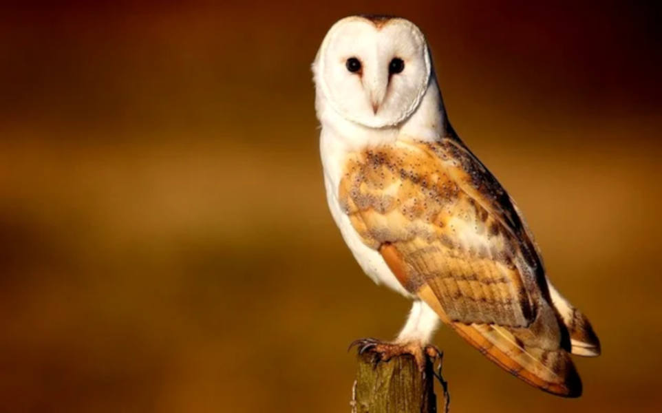
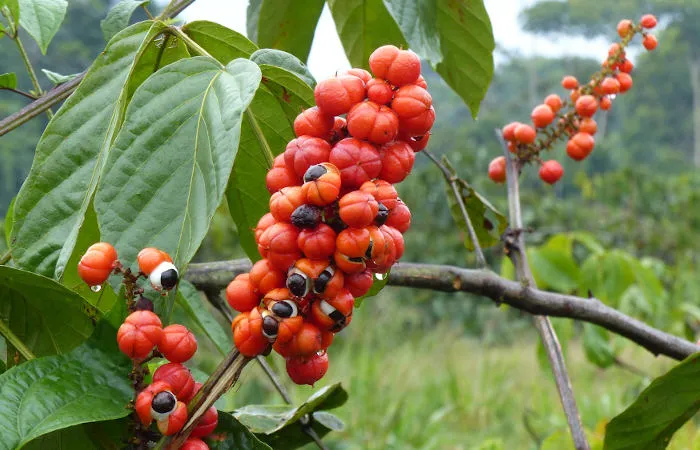
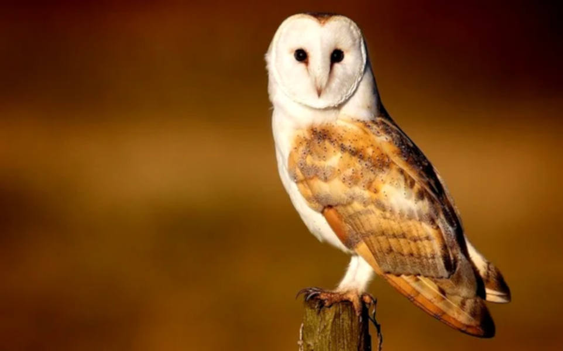

A amazônia é um importante bioma com 6,9 milhões de km² de extensão, abrangindo nove países, incluindo o Brasil. A parte do Brasil equivale a 4 milhões de km², sendo o maior bioma do país. Além de ser imenso, esse bioma também é conhecido por sua enorme biodiversidade.
O clima da Amazônia é equatorial, caracterizado por elevadas temperaturas, com temperaturas médias entre 22 e 28°C e grande índice pluviométrico, entre 1400 e 3500 mm por ano. A bacia amazônica é a maior bacia hidrográfica do mundo, e seu principal rio, o Amazonas, é o maior rio do mundo, com mais de 7 mil afluentes.
A Amazônia é conhecida por sua grande biodiversidade, com 45 mil espécies de plantas e animais vertebrados. Sua fauna é responsável por 20% da biodiversidade do planeta, incluindo animais em risco de extinção e animais endêmicos. Sua vegetação é densa e formada por árvores de grande porte, algumas sendo nativas do bioma, como o açaí, seringueira e castanheira.